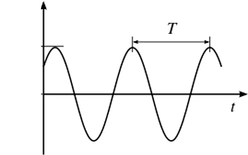
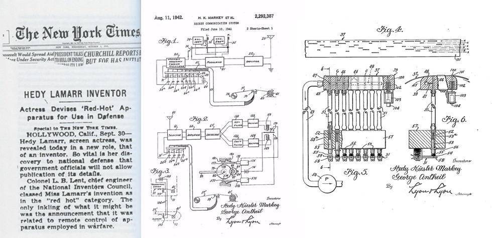

Você já pensou por um momento como nós temos o mundo na palma das nossas mãos? que temos um banco de dados capaz de nos prover qualquer informação que a humanidade adquiriu em anos de estudo? sim isso mesmo! Nossos telefones celulares ou smarthphones. É você já parou pra pensar o que alimenta nossos aparelhos celulares? que conecta ele ao resto do mundo, a rede por trás disso? vamos apresenta-los sobre o wi-fi e o quão complexo e revolucionário e algo que hoje em dia e tão cotidiano na nossa vida, conecte-se ao nosso mundo!
Hedy nasceu como Hedwig Eva Maria Kiesler, em Viena, na Áustria-Hungria, em 9 de novembro de 1914. Era a filha única de Gertrud Lichtwitz Kiesler, uma pianista de família judaica de Budapeste, vinda de uma família de classe média. Emil Kiesler, como seu pai era chamado, Era gerente financeiro de um grande banco de Viena. Seu pai nasceu em uma família de judeus da Galícia em Lemberg, hoje a cidade de Lviv, na Ucrânia. Ainda que sua mãe tivesse origem judaica, Gertrud se converteu ao catolicismo por influência de seu primeiro marido e acabou criando Hedy como católica, ainda que ela não tivesse sido formalmente batizada. O interesse na atuação veio desde cedo, quando Hedy, ainda criança, assistia a peças de teatro e a filmes. Estudou balé e piano até os 10 anos e aos 12 anos, ganhou um concurso de beleza em Viena. Hedy era muito ligada ao pai, com quem tinha conversas sobre política, ciência, tecnologia e ele foi uma grande inspiração para sua invenção futura.
Viena, antigo Imperio Áustria-hungaro, cidade aonde Hedy nasceu.
Hedy começou sua carreira de atriz em vários filmes alemães, austríacos e tchecos, inclusive o controverso filme Ecstasy (1933). Em 1937, ela fugiu de seu marido, o fabricante de armas austríaco, Friedrich Mandl, mudando-se para Paris e depois se refugiando em Londres. Lá ela conheceu Louis B. Mayer, diretor dos estúdios da Metro-Goldwyn-Mayer (MGM) e lhe ofereceu um contrato em Hollywood, onde ela logo foi promovida como sendo a "mulher mais bonita do mundo". Em 1940, Lamarr conheceu George Antheil em um jantar. Antheil era outra força peculiar, mas inteligente, a ser reconhecida. Conhecido por seus escritos, trilhas sonoras de filmes e composições musicais experimentais, ele compartilhava o mesmo espírito inventivo de Lamarr. Ela e Antheil conversaram sobre vários assuntos, mas sua maior preocupação era a guerra iminente. Antheil relembrou: “Hedy disse que não se sentia muito confortável, sentada lá em Hollywood e ganhando muito dinheiro quando as coisas estavam naquele estado”. Após seu casamento com Mandl, ela tinha conhecimento sobre munições e vários armamentos que seriam benéficos. E assim, Lamarr e Antheil começaram a pensar em ideias para combater as potências do eixo.
Hedy em sets de filmagem nos EUA.
O salto frequência nada mais era que mudar a frequência de rádio para evitar interferência de sinal, ela foi criada com a ajuda do compositor George Antheil como um sistema secreto de informações, o salto de frequência nada mais era que pausas e pulos entre frequências de rádio fazendo intervalos irregulares entre transmição e recepção, a invenção foi usado para uso exclusivamente militar, permitindo uma rede de comunicação inquebrável. Além de poder interceptar mensagens secretas dos inimigos, Hedy recebeu uma patente do governo americano e logo depois doou a tecnologia para eles poderem combater os nazistas na segunda grande guerra, aonde serviu de recurso comunicativo e de recurso geográfico ajudando a guiar torpedos americanos por debaixo do mar.

Imagens da Onda de Radio quando e feita o Salto de Frequência.
O espectro propagado era uma forma de pegar um sinal, seja ele eletromagnético, elétrico, acústico e etc, gerado por uma largura de banda( largura de banda e a diferença entre banda inferior e superior em uma banda continua de frequências medido em Heartz, banda nada mais e que uma frequência alem das frequências de radio) essa largura de banda e espalhado deliberadamente no domínio da frequência que consiste em a analise de funções matemáticas ou sinais de relação de frequência, de uma maneira simplificada e a forma como um sinal muda ao longo do tempo, isso tudo resulta em um sinal cuja sua banda e mais larga que o comum.

Imagens Das Invenções De Hedy Publicadas No New York Times
As invenções de Hedy se Juntaram com oque foi conebido a tesla e o Jonathan Zenneck um inventor Alemão para forma com as duas tecnologias o FHSS, se você já viu em seu roteador ou então no seu próprio celular o tipo de rede wi-fi você sabe que não e FHSS e sim DSSS , ele nada mais e que um espectro espelhado de frequencia direta, que em inglês a sigla e DSSS, nada mais e que uma adaptação das frequências quem sai de uma torre postes, vai para roteadores e depois vai para seu celular diretamente, sem ficar soltando frequencias a vulso. Por ser uma mulher seu talento foi subestimado pelos EUA e sua invenção jugada como algo que não era nada demais, eles só foram se tocar da força e do potencial da tecnologia desenvolvida por ela na crise dos Misseis em Cuba, aonde sua tecnologia impediu de acontecer um desastre de níveis globais
Enquanto o salto de frequência adaptativo e chamado de AFH tecnologia usado pelo Bluetooth, que como o nome diz ele se adapta, ele usa a tecnologia do salto de frequências e espectros espelhados para assim poder encontrar um caminho claro entre dois aparelhos que evite a colisão de pacotes. enquanto o salto de frequência adaptativo e chamado de AFH tecnologia usado pelo Bluetooth, que como o nome diz ele se adapta, ele usa a tecnologia do salto de frequências e espectros espelhados para assim poder encontrar um caminho claro entre dois aparelhos que evite a colisão de pacotes
Hoje em dia tudo em que mechemos envolve a tecnologia que lammar proporcionol a gente, o wi fi e o compartilhamento de dados e o que move o mundo hoje em dia, nossas mensagens, nossas noticias, nosso lazer, tudo esta ligado a internet, em tempos como o da pandemia isso se mostrou ainda mais útil para o mundo atual, aonde nós conseguimos aliviar o impacto do que seria o maior déficite, social econômico do nosso século, a prova disso e a nossa escola, aonde conseguimos contornar por meio da internet e do wi fi.
O mundo depois do século XXI nunca mais foi o mesmo, lamarr teve grande parcela de culpa nisso, mesmo sua aparência ocultando sua genialidade por pessoas que só a enxergavam como uma atriz, Hedy sempre foi decidida e nunca se mostrou menos que uma inventora, depois de anos ela arrecadou prêmios tardios e suas conquistas foram reconhecidas, ela abriu caminho não apenas para que outras centistas e inventoras pudessem passar mas também para toda uma era da informação.
Trabalho Realizado Pelo Terceiro Ano "B" do Colégio Estadual
José Leitão/Bahia Para a Feira de Ciências Com o Tema Mulheres
Na Ciência, Nos fizemos o Site com o intuito de usar uma tecnologia
que Lamarr proporcionou a gente para expandir o Conhecimento sobre a mesma.
Alunos envolvidos:
Raissa,
Guilherme Dias,
Guilherme Vitorio,
Lucas Gabriel(esquematizador do Site),
Kauan,
Caio,
Robenilson,
Vitor,
Obrigado pela Leitura e comparecimento.